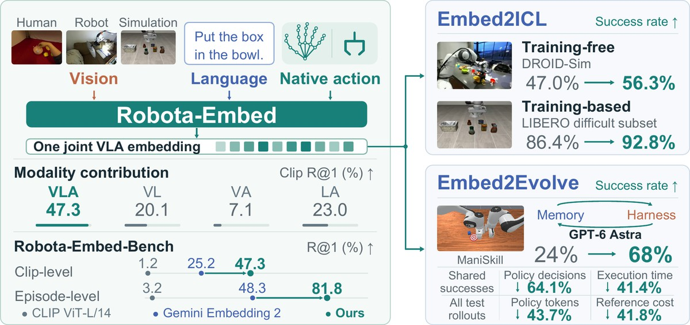
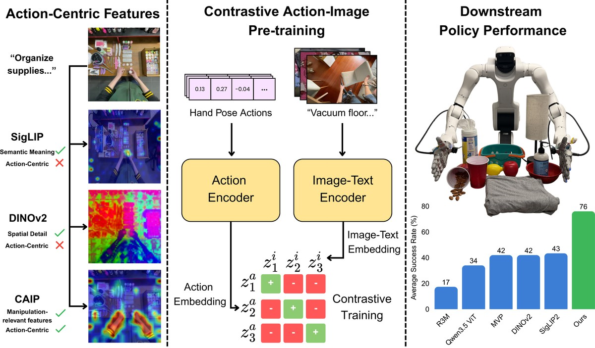
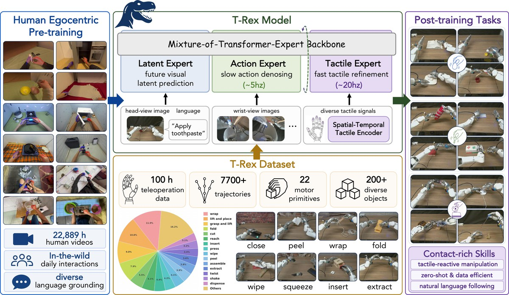

Research
* denotes equal contribution.

Robota-Embed: Unified VLA Embeddings for Robot In-Context Learning and Evolution
Yunze Liu*, Jing Wang*, Shenrui Wu, Wenkun He, Guanqi Zhan, Xianzheng Ma, Junyu Chen, Wenhang Ge, Haozhan Tang, Yuchao Gu, Zhuoyang Zhang, Zekai Wang, Dantong Niu, Zhen Dong, Yuke Zhu, Trevor Darrell, Linxi Fan, Song Han, Han Cai
Under review, 2026
arXiv
project page

Contrastive Action-Image Pre-training for Visuomotor Control
Yuvan Sharma*, Dantong Niu*, Anirudh Pai*, Zekai Wang, Zhuoyang Liu, Baifeng Shi, Stefano Saravalle, Boning Shao, Ruijie Zheng, Jing Wang, Konstantinos Kallidromitis, Yusuke Kato, Fabio Galasso, Yuke Zhu, Danfei Xu, Linxi Fan, Jitendra Malik, Trevor Darrell, Roei Herzig
Under review, 2026
arXiv
project page
code

T-Rex: Tactile-Reactive Dexterous Manipulation
Dantong Niu*, Zhuoyang Liu*, Zekai Wang*, Boning Shao, Zhao-Heng Yin, Anirudh Pai, Yuvan Sharma, Stefano Saravalle, Ruijie Zheng, Jing Wang, Ryan Punamiya, Mengda Xu, Yuqi Xie, Yunfan Jiang, Letian Fu, Konstantinos Kallidromitis, Matteo Gioia, Junyi Zhang, Jiaxin Ge, Haiwen Feng, Fabio Galasso, Wei Zhan, David M. Chan, Yutong Bai, Roei Herzig, Jiahui Lei, Fei-Fei Li, Ken Goldberg, Jitendra Malik, Pieter Abbeel, Yuke Zhu, Danfei Xu, Linxi Fan, Trevor Darrell
CoRL 2026
arXiv
project page
code
Teaching
I have seven semesters of teaching experience at Berkeley.
- DATA 188: Introduction to Deep Learning, Teaching Assistant, Spring 2026
- EECS 126: Probability and Random Processes, Teaching Assistant, Spring 2025
- CS 189: Introduction to Machine Learning, Tutor, Fall 2024
- DATA 100: Principles and Techniques of Data Science, Head Teaching Assistant, Summer 2024
- CS 189: Introduction to Machine Learning, Teaching Assistant, Spring 2024
- CS 61C: Great Ideas of Computer Architecture, Junior Mentor (Computer Science Mentors), Fall 2023
- CS 61A: Structure and Interpretation of Computer Programs, Academic Intern, Fall 2022